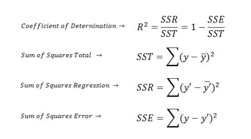
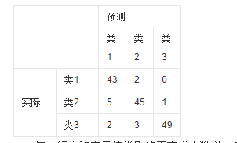

【统计学习】Model Assessment(模型评估)
Hold-out(留出法)
Divide samples to two parts-Test samples、Train samples randomly. And then assess the result. To increase the reliability of result , we often repeat this process several times.And take the average of assessment.
就是分成2部分，测试集和训练集，随机地划分。并对结果进行评估。评估会进行多次，然后取平均值。
S很大时，结果会不够稳定准确，S很小时，会丧失保真性（fidelity）
k-fold cross validation(k折交叉验证)
Divide samples to k similar parts,
Everytime use k-1 subsets as Train set ,the rest set as Test set,and take the same operation on k set,then calculate the average as the assess result.
每次用k-1个子集作为训练集，剩下一个作为测试集，对K个集合都执行这样的操作，然后取平均值
Leave-One-Out(留一法)
in k-fold cross validation ,k=m
bootstrapping(自助法)
自助法：以自助采样（bootstrap sampling）为基础产生数据集，即随机从D中选择一个样本的拷贝，重复m次，作为训练集。不被采样到的概率再取极限得
即，约有36.8%未被采样，并将它作为测试集。这样产生的测试结果称为“包外估计”（out-of-bagestimate）。
由于自助法产生的数据集改变了初始数据集的分布，这会引入估计误差。因此，当数据量足够时，留出法与交叉验证法更常用。
自助法的要点是：①假定观察值便是总体；②由这一假定的总体抽取样本，即再抽样。由原始数据经过再抽样所获得的与原始数据集含量相等的样本称为再抽样样本(resamples)或自助样本(bootstrapsamples)
度量
RMSE(Root Mean Squared Error:均方根误差)
误差均值开根号
RSE(Relative Squared Error:相对平方误差)
MAE(Mean Absolute Error:平均绝对误差)
RAE(Relative Absolute Error:相对绝对误差)
residual(残差)
观测值和预测值的差
standardized residual(标准化残差)
用残差除于标准差
Coefficient of Determination(决定系数)

R2描述了回归模型所解释的因变量方差在总方差中的比例。R2很大，即自变量和因变量之间存在线性关系，如果回归模型是“完美的”，SSE为零，则R2为1。R2小，则自变量和因变量之间存在线性关系的证据不令人信服。如果回归模型完全失败，SSE等于SST，没有方差可被回归解释，则R2为零。
Confusion Matrix(混淆矩阵)

对角线数值越大，说明模型越好
Bayesian information criterion(贝叶斯信息度量)
。选择模型时选择BIC最大的模型。